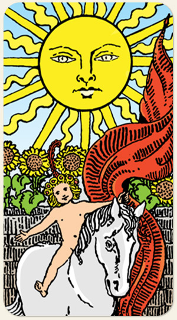

A fonte de toda a vida, a iluminação espiritual e a mente consciente em seu estado mais brilhante, é o ego, aquilo que está em evidência, o que é impossível de esconder. A criança deste Arcano é o herdeiro do Imperador com a Imperatriz.
Positivo: Vida, brilho, glória, nascimento, êxito, sucesso, calor, fertilidade, vitória por meio do trabalho, força, fama, auto orgulho, simplicidade, inocência.
Negativo: Ego inflado, vaidade, arrogância, egocentrismo, falso brilho de tolo, autoritarismo, centralização extrema, baixa energia, desânimo, apatia, um calor que incinera tudo e não produz nada.
Amor e Sexo: Fala que o relacionamento vai, viço e rotina, ciclos, alegria, novidade, o raiar da vida, muda o dia, muda a rotina, uma área onde a pessoa se sente empoderada. Beleza apolônica, tem um brilho no olhar, se sente o centro do sistema solar, chamativa, de grande prestígio, fertilidade, exibicionismo, demonstrações públicas de afeto, ser o centro das atenções, nudes que vazam, assuntos revelados.
Trabalho e Dinheiro: Pessoas que trabalham de sol a sol, estar em evidência, ser observado, animais de grande porte. Associado ao ouro, pessoas públicas, prosperidade, cornucópia, opulência, olho gordo, metas altas ou gastos altos, preciosidades, terras e fazendas.
Espiritualidade: Todas as luzes e todas as suas sombras, divindades solares, Deus, Jesus, divindades masculinas, espíritos ligados à linha das crianças, seres iluminados, divindades famosas, líderes espirituais. Grande vaidade: o Papa se acha o único que pode falar com Deus, o Sol se considera o próprio Deus.
Símbolos: Sol, Girassol, Criança, Nudez, Coroa de Flores, Pena Vermelha, Estandarte Vermelho, Cavalo Branco.
Cores: Amarelo, Azul, Vermelho, Cinza.
Elemento: Terra e Espírito.